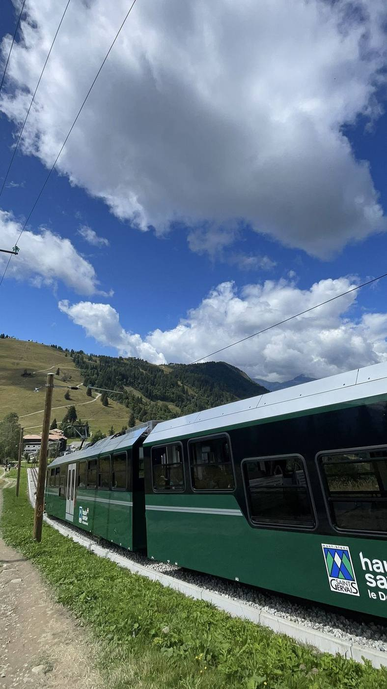

🗺️ Le parcours en carte
Adrixplore · du 3 au 11 août 2025
Introduction
Cet été, avec mon père, on s’est lancé dans un gros projet : le Tour du Mont-Blanc. Environ 170 km et plus de 10 000 m de dénivelé positif, à parcourir en 9 jours, sac sur le dos, en autonomie, avec la tente, le réchaud et le lyophilisé. Départ et arrivée aux Houches, avec un tour complet du massif qui passe par la France, l’Italie et la Suisse.
Petite précision : on a dormi sous tente tout du long, en camping ou en bivouac. Pas de refuge en dortoir, mais quelques bons repas pris sur la route quand l’occasion se présentait.
Dans cette page, tu trouveras le récit jour par jour, avec les étapes, les repas, les rencontres, les galères et les beaux moments. Tu trouveras aussi le détail de mes dépenses, pour te donner une idée du budget à prévoir. Bonne lecture !


Jour 1 : dimanche 3 août
🚗 Lozère ➜ Les Houches 🦶 Les Houches ➜ Refuge de Miage
Réveil à 5h30 à la maison, ça pique. Petit-déj, on prépare le pique-nique, les derniers détails, et on part pour environ 5h de route. Tout se passe bien, avec une mini-pause pipi et sans changement de conducteur : je me sens bien et je fais tout pour laisser mon père se reposer.
On arrive vers 11h50 au parking gratuit du TMB. Il est blindé, on pense ne pas trouver de place, et en redescendant, coup de chance : deux filles qui s’en vont. On prend leur place et on pique-nique avec la petite salade de riz préparée avec amour par maman.
Ensuite, on ferme bien la voiture et on part vers 12h45. On cherche le départ pour faire la photo et au final on fait un sacré détour et on rate le bon départ. On revient sur nos pas, on trouve enfin le début du sentier et on fait la première partie de la montée avec un monsieur très gentil qui connaît bien le coin.
Après une bonne grosse montée dans les bois, on arrive au col de Voza, avec une jolie vue. On continue de monter encore un peu, à côté du train qui grimpe par là aussi. Puis vient une portion plus plate avec un peu de descente, avant de traverser une passerelle au-dessus de l’eau. Et là, c’est reparti pour une grosse montée bien raide jusqu’au col de Tricot. C’est beau, mais ça monte, et une fois en haut, à 2100 m, il fait froid.
On voit le refuge de Miage et l’aire de bivouac où l’on doit dormir. La descente est bien raide et casse les jambes. On a hâte d’arriver et on espère pouvoir manger au restaurant du refuge. On arrive à 18h25 et on demande si c’est possible : on nous répond « pour 18h30, dans 5 minutes, et à l’extérieur ». On est partants, au moins on aura mangé, parce qu’on a la flemme de cuisiner ce soir. Menu omelette à 17 € par personne et une bière chacun. C’est très bon et ça requinque.
Après ça, direction l’aire de bivouac, on monte la tente, etc. On capte un petit peu, j’en profite pour donner quelques nouvelles. Petite toilette rapide parce qu’il fait froid, et au lit !
Jour 2 : lundi 4 août
🦶 Chalets de Miage ➜ Refuge du col de la Croix du Bonhomme
On est réveillés par des petits enfants qui ont aussi fait du bruit hier soir, en plus des gens qui montent leur tente à 22h… Il fait froid et il y a une rosée comme je n’en ai jamais vu : la tente est trempée. On range tout dans les sacs et on décolle vers 7h10.
On démarre par une bonne petite montée qui réchauffe avant de descendre sur Les Contamines. On y achète 4 salades en conserve pour les prochains pique-niques. Je les prends dans mon sac (+1 kg) : on ne va pas surcharger le père, car la montée qui arrive va être longue et difficile. De 1100 m, on doit monter à 2480 m. Avant ça, on fait une pause sur un banc, saucisson, fromage et un peu de pain. Il le fallait, parce qu’après, ça monte.
On grimpe jusqu’au refuge de la Balme, où on s’arrête pour manger chacun une omelette au comté avec de la salade. Elle est très bonne et ça requinque. On en profite pour passer aux toilettes, bien propres. Ensuite, c’est une montée assez difficile et longue jusqu’au col du Bonhomme. On aperçoit les lacs Jovet et une ou deux marmottes. Au col, la vue est magnifique, mais il faut encore faire un peu de dénivelé pour atteindre le col de la Croix du Bonhomme. La vue y est belle aussi, mais on descend vite au refuge pour trouver un terrain plat sur l’aire de bivouac. On a bien fait, parce que ce n’est pas facile d’en trouver un.
On fait sécher la tente sous le vent, puis on la monte. Je fais un peu de lessive dans un petit ruisseau, puis une petite toilette au gant, mais quand le vent souffle, il fait froid. Ensuite on se met à cuisiner : une petite soupe pour commencer, puis le lyophilisé, et on finit par un peu de saucisson et de fromage en dessert, avec une belle vue.
On range tout et on se pose un peu avant d’aller faire un dernier pipi. Mais je vois que le ciel est beau avec le coucher de soleil et je me motive pour remonter un peu vers le col. La vue était magnifique, je n’ai pas regretté. Je redescends ensuite à la tente et je me couche, parce que demain, une grosse journée nous attend aussi !
Jour 3 : mardi 5 août
🦶 Refuge du col de la Croix du Bonhomme ➜ Camping Aiguille Noire
Réveil vers 5h45 dans le froid et départ vers 6h30 pour une grosse étape. On monte d’abord au col du Four par la variante, et c’est très beau : dans la descente, on voit des bouquetins et des marmottes, et on est quasiment seuls. On finit par arriver au village des Glaciers, pour attaquer ensuite la longue montée du col de la Seigne. Au départ ça va, puis ça grimpe, mais c’est très beau. On fait une pause saucisson-fromage dans la montée, et on arrive enfin au col, avec une vue magnifique mais beaucoup de vent.
On redescend plus bas pour manger, assis sur un banc devant une petite maisonnette en travaux qui sert habituellement de point info. La vue est top pour le repas de ce midi. On repart pour le reste de cette longue descente et on avance bien jusqu’à la cabane du Combal, où l’on bifurque à gauche pour éviter de remonter puis redescendre avant d’arriver au camping. On quitte donc le GR et on descend jusqu’au camping.
Un peu d’attente pour être installés, avec un petit trajet en voiturette. Ensuite, on fait sécher la tente et on la monte. Et après, le moment tant attendu : une vraie douche chaude, et ça fait du bien ! On lave notre linge et on l’étend, puis direction l’épicerie. On cuisine avec le réchaud juste devant la salle, et on se régale : une bonne tomate au chaud, puis 500 g de pâtes à deux avec une sauce bolognaise, et même une petite pomme en dessert. On en profite pour tout recharger en même temps. Je reste un moment pour regarder quelques trucs sur les prochains jours, puis retour à la tente pour aller se coucher !
Jour 4 : mercredi 6 août
🦶 Camping Aiguille Noire ➜ Camping Tronchey
Réveil un peu avant 6h après une bonne nuit. La tente est encore mouillée, même plus bas en altitude. On décolle vers 6h45 pour regagner le GR, en montant par une piste de ski bien raide, avec 400 m de D+. On arrive au col Checrouit, au niveau du refuge Maison Vieille, où on s’arrête sur une table avec une belle vue : une pomme, une compote, un peu de pain avec du fromage.
Après avoir repris des forces, on descend jusqu’à Courmayeur, une longue descente assez raide, mais qui offre une jolie vue. À Courmayeur, on passe dans une boulangerie acheter du pain, deux croissants et une part de focaccia pour se donner des forces avant la belle côte qui nous attend. En effet, une fois qu’on quitte Courmayeur, ça monte de plus en plus jusqu’au refuge Bertone, qui offre une belle vue sur le Mont-Blanc. Il y a beaucoup de monde, on préfère aller plus loin pour être tranquilles.
On finit par trouver un coin calme avec plein de myrtilles. On mange les deux salades qu’il nous restait, du pain, du saucisson et du fromage, et bien sûr les myrtilles en dessert. Par contre, la salade de riz au thon est à éviter, c’est trop sec, papa s’en souviendra. Après ce repas, on repart pour finir l’étape.
On arrive au carrefour qui permet de descendre sur les campings. On avance encore un peu pour prendre quelques photos de la vallée et du Mont-Blanc avant de descendre. On arrive à côté d’une route, et 1 km plus loin, on trouve le camping. On passe par l’accueil et on s’installe dans un pré au fond, avec peu d’endroits plats, mais il y en a, surtout que nous sommes parmi les premiers.
On se pose, on monte la tente, on lave du linge et on va boire une petite bière avec des chips et des cacahuètes. Ensuite, c’est la douche : 4 min pour 1 €, avec un interrupteur qui permet de stopper le temps quand on se savonne. Une fois propres, on va à l’épicerie et on achète des ravioles à la viande séchée, du jambon de pays, deux yaourts au citron et une canette de Sprite pour le repas du soir. On cuisine, puis on discute avec 3 jeunes de Normandie très sympas. Et enfin, on rentre la tente, pipi, dents et dodo !
Jour 5 : jeudi 7 août
🦶 Camping Tronchey ➜ Camping des Glaciers (La Fouly)
Réveil vers 6h et départ vers 6h50. On démarre par 6 km de route que certains font en navette, mais nous ne voulons pas la prendre : on veut pouvoir dire qu’on a tout fait à pied. Le ciel est couvert, on est sous les nuages dans la vallée.
On regagne le tracé du GR à Arp Nouva et on attaque une montée. On fait une pause au refuge Elena, très sympa et avec une belle vue (on peut d’ailleurs y bivouaquer). On y mange un croque-monsieur avec un Sprite, ça fait du bien avant de finir la montée jusqu’au Grand Col Ferret, à 2500 m. Il y a beaucoup de vent en haut, on ne reste pas longtemps.
On descend ensuite assez rapidement jusqu’à La Peule, où l’on retrouve les 3 gars avec qui on a parlé hier soir (Sacha, Lucas et Silian). Silian est en navette, on fait donc la descente à 4. La fin est un peu longue, mais on finit par arriver à La Fouly et au camping. Il faut monter pour atteindre la réception, ça casse encore un peu les jambes.
On s’installe, on réserve deux pizzas pour ce soir dans le camping et on fait des courses pour ce midi. Il a fait chaud aujourd’hui, alors on mange frais : carottes râpées, tomate, mozzarella et œufs durs. C’est pas mal, ça change et ça fait du bien. Plus un petit yaourt en dessert. Ensuite, douche et linge. Une fois que tout est bon, on va se rafraîchir les pieds dans l’eau. Elle est vraiment glaciale, mais ça fait du bien.
On remonte à la tente et on va chercher les pizzas, qu’on mange en haut avec une assiette. Elles sont vraiment très bonnes, on sent que ce sont de bonnes pizzas artisanales. On discute avec un couple qui va malheureusement devoir arrêter. En rentrant, on reparle avec les deux gars des Pyrénées qu’on avait vus au départ, et avec les deux Bretons qui se sont installés à côté de nous. On discute un peu, puis petite pomme en dessert, dents, toilettes et dodo !
Jour 6 : vendredi 8 août
🦶 Camping des Glaciers ➜ Camping Relais d’Arpette
Réveil vers 6h, on range tout et on décolle vers 6h50. C’est parti pour une étape un peu plus cool en termes de temps. On part du camping et on descend le long du cours d’eau jusqu’à Praz-de-Fort. La portion dans les bois est assez jolie, on trouve même un cèpe au bord du chemin. On passe devant un bar qui propose une belle formule petit-déjeuner, on est presque tentés, mais on a déjà de quoi manger. On s’installe donc au soleil, au début de la montée vers Champex, et on grignote un bout.
Ensuite, on attaque la montée dans les bois, c’est assez joli, je vois même un petit écureuil. Il y a aussi des animaux sculptés dans le bois. À un moment, on croit s’être trompés et on retrouve le couple de Bretons qui a dormi à côté de nous et qui avait peur des ronflements de papa. Mais ça va, ça a été cette nuit. On monte ensuite avec eux jusqu’à Champex. Le lac est joli et donne envie de se baigner.
On cherche où manger : tout est un peu cher en Suisse. On passe devant l’épicerie en se disant qu’on y reviendra après manger. On va dans une boulangerie, on mange un sandwich et on boit une bière, pour un prix correct et avec un vrai sandwich. On partage ce moment avec Hervé et Didier, des Pyrénéens que l’on suit depuis la 2e journée. Ensuite, on décide d’aller à l’épicerie, mais elle est fermée de 12h30 à 13h30. On se dit qu’on va monter au camping et qu’on verra bien ce qu’il y a là-haut.
On monte le long d’une « bisse », c’est agréable dans les bois. On arrive au camping : pas d’épicerie, et le repas du soir, c’est uniquement du chili con carne. Pas fan, je fais un tour, le coin cuisine est sympa. Après réflexion, je décide de redescendre en courant à Champex pour faire des courses et se faire un bon repas. Je me prépare et j’y vais à fond, le chemin est sympa. On se fait plaisir : tomates, pâtes, sauce bolognaise, et le parmesan ! Plus bananes et Tuc pour avoir des en-cas pour demain.
Je remonte tout ça en courant, c’est plus dur. Je croise une petite fille qui, quand je descendais, disait « il va vite, le monsieur », et qui dit, quand je remonte : « ah ben non, maintenant il marche ». Je lui réponds : « normal, c’est plus dur ! »
Arrivé en haut, je vais me rafraîchir à l’eau, je prends une bonne douche, je lave mon linge, et on se pose pour discuter avec Hervé et Didier. Vers 18h, on se met à cuisiner et c’est le festin, certains nous envient : soupe de potiron, tomates et carottes râpées, pâtes bolo avec parmesan et pomme en dessert. Après ce bon festin, passage aux toilettes et dodo !
Jour 7 : samedi 9 août
🦶 Camping de l’Arpette ➜ Chalets de Charamillon
Réveil à 5h pour décoller tôt, vers 5h45-5h50, pour une étape assez difficile. C’est parti pour la montée à la Fenêtre d’Arpette, soit environ 1000 m de D+ d’un coup. Le début n’est pas trop compliqué, avec le soleil qui se lève derrière nous, c’est beau. Puis petit à petit, on arrive dans les cailloux et ça devient difficile. Sacha et Lucas nous rattrapent, et nous, on rattrape les Pyrénéens. On fait une pause banane et Tuc pour prendre des forces. Et après une fin bien difficile, on arrive tous ensemble en haut.
On attaque la descente ensemble, c’est technique et ça glisse, ce qui donne lieu à quelques chutes. On finit par arriver à un petit endroit avec des tables, où l’on mange un peu de pain, de saucisson et de fromage, « le classique ». Sacha et Lucas repartent avant nous, mais on se retrouve au chalet du Glacier, en bas de la descente. On prend un petit sandwich et un coca pour se requinquer avant de remonter par la variante des Grands. On a bien fait, parce que ça remonte bien et que le refuge des Grands ne fait pas à manger. La passerelle bouge pas mal au départ.
Une fois arrivés au refuge des Grands, on voit à nouveau très bien les glaciers, c’est joli. Ensuite, une bonne portion au soleil, sur un chemin un peu technique, nous amène au col de Balme. On n’y reste pas trop et on descend sur les chalets de Charamillon. Notre réservation a bien été prise en compte et l’accueil est top. On prend le repas du soir pour 24 €, et il y a même une corbeille « épicerie » pour dépanner, mais aussi acheter du bon fromage et du saucisson. On en prend pour la suite, mais plus de saucisson, ce sera du speck.
On monte la tente avec vue sur le Mont-Blanc et on va boire une petite bière. Ensuite, c’est comme d’habitude : douche, un peu de linge… Il nous reste 3 œufs crus qu’on mange pour patienter jusqu’au repas, et on se pose sur la petite terrasse pour profiter du wifi. On voit alors arriver Sacha et Lucas, qui ont prévu de manger là ce soir et qui attendent Silian. Lui a mis pas mal de temps en passant par l’autre côté, et il arrive d’ailleurs bien épuisé.
On passe à table et c’est un très bon repas, avec de bonnes portions, on passe un bon moment. Après le repas, on discute un peu avec un couple de Suisses très gentils, puis dents et au lit !
Jour 8 : dimanche 10 août
🦶 Chalets de Charamillon ➜ La Flégère
Joli réveil vers 6h, avec la vue sur le Mont-Blanc et une pleine lune. On prend le temps de tout plier avant de partir pour une bonne descente. En bas, on retrouve Sacha, Lucas et Silian, qui ont bivouaqué plus bas. Ils vont essayer de finir aujourd’hui même, même si ça va être chaud. On se suit et on attaque la montée ensemble. Silian a un peu de mal avec son genou, on les attend de temps en temps.
On finit par arriver aux échelles, bien dures à passer. On les monte, et une fois en haut, on voit que Silian ne se sent pas de les monter, ce qui peut se comprendre, elles sont assez vertigineuses. On continue avec Lucas et Sacha, tandis que Silian finira par la vallée pour retrouver les autres aux Houches. On monte ensemble jusqu’au cairn de la Tête aux Vents, où nous partons pour le Lac Blanc.
Ça monte encore pas mal, on voit d’abord les lacs de Chésérys, déjà très beaux. On finit par arriver au Lac Blanc, après un bon kilomètre vertical, et on se boit un petit Orangina. Il y a un monde fou. Le lac est beau, mais avec les accès en télésiège ou en télécabine, il y a trop de monde, ce qui est un peu dommage. On fait un petit tour et on repart pour la descente sur La Flégère.
Arrivés en bas, on mange une omelette au comté dans un restaurant. Puis on va au refuge réserver le repas du soir et demander où on peut bivouaquer. On doit attendre pour planter la tente, alors on se pose à l’intérieur du refuge, on fait charger nos affaires et on va se laver avec le robinet des toilettes et un gant, puisqu’on n’a pas accès aux douches en bivouac. Ensuite, on descend monter la tente et se baigner dans le lac. Enfin, au départ, on trempe les pieds, puis je vois que tout le monde se baigne et j’ai chaud, donc je décide de faire un petit plouf.
On remonte au refuge pour le repas. Plutôt un bon repas : salade de crudités en entrée, tartiflette, fromage et dessert au choix (j’ai opté pour le fromage blanc avec de la confiture de myrtilles). Seule la tartiflette avait un goût de trop peu. À la fin du repas, on profite d’un coucher de soleil sur le Mont-Blanc et, en redescendant à la tente, on discute avec un couple très sympa qui souhaite faire le GR20. Ensuite, on va rapidement se coucher, parce que demain, une grosse journée nous attend, entre la dernière étape et la route !
Jour 9 : lundi 11 août
🦶 La Flégère ➜ Les Houches 🚗 Les Houches ➜ Lozère
Réveil à 5h pour ce dernier jour. On veut décoller tôt pour ne pas avoir trop chaud et ne pas rentrer trop tard à la maison. On part vers 5h30 avec la frontale. On démarre par un faux plat montant dans les bois et on avance assez vite, jusqu’à croiser plein de chamois et de bouquetins. On en voit des dizaines juste avant Planpraz.
On entame ensuite une partie plus raide pour monter vers le Brévent. On aperçoit à nouveau des bouquetins, et on passe même très près de certains au col du Brévent. Il reste encore un petit bout avant d’arriver au sommet : une partie très rocailleuse, avec encore des échelles ! On arrive enfin en haut du Brévent, avec une très belle vue sur le Mont-Blanc et tout le massif en face de nous.
On fait une pause pour manger et se requinquer sur une table, avec du pain, du saucisson et du fromage, « le classique ». On se fait virer par le mec du snack alors qu’il n’y a encore personne… On finit juste à côté, assis sur des cailloux. Puis on décide de repartir, il ne nous reste que 3h de descente pour arriver aux Houches.
On démarre la descente, on voit le lac du Brévent, et on descend encore et encore. On passe au refuge de Bellachat, on aperçoit les premiers panneaux « Les Houches », et on continue de descendre à bon rythme : le daron bombarde la descente, on a envie de finir. On regagne la route, on la traverse pour rejoindre le centre du village et on fait une photo d’arrivée sous l’arche.
On décide ensuite d’aller poser nos sacs à la voiture, qui n’est pas si proche, mais on en a marre de les porter. On se change et on revient au centre pour boire une bonne bière et manger un bon burger pour fêter ça. On trouve une place sur un tonneau dans la petite brasserie, qui est bondée. La bière et le burger sont très bons. Je pars ensuite chercher la voiture en courant pour gagner du temps. On fait un petit arrêt pour acheter un ou deux souvenirs, et c’est parti pour regagner la maison. La route est un peu longue, mais on se la partage, et on finit par arriver à la maison.
Mon budget
| Jour | Dépenses | Total |
|---|---|---|
| J1 | Chalets de Miage : 2 menus omelette + 2 bières (43 €) | 43 € |
| J2 | 4 salades aux Contamines (16 €) · 2 omelettes au comté à La Balme (29 €) | 45 € |
| J3 | Camping Aiguille Noire (29 €) · épicerie pour le repas (8 €) | 37 € |
| J4 | Camping Tronchey (27 €) · douche (2 €) · bières + chips (15 €) · épicerie (11 €) | 55 € |
| J5 | Croques et Sprite au refuge Elena (20 €) · camping des Glaciers (37 €) · courses à l’épicerie (19 €) · 2 pizzas (36 €) | 112 € |
| J6 | Sandwichs + bières à la boulangerie (21 €) · courses à Champex (26 €) · camping de l’Arpette (35 €) | 82 € |
| J7 | Sandwich + coca au chalet du Glacier (22 €) · bivouac + repas à Charamillon (69 €) · tomme + speck (8 €) | 99 € |
| J8 | 2 Orangina au Lac Blanc (10 €) · 2 omelettes + San Pellegrino (33,50 €) · repas du soir au refuge de La Flégère (56 €) | 99,50 € |
| J9 | Burgers et bières à l’arrivée (52 €) | 52 € |
| Trajets | Aller-retour en voiture (environ) | 100 € |
| Total | environ 725 € |
Conclusion
Neuf jours, trois pays, des cols, des échelles, des glaciers, des marmottes, des bouquetins et un nombre incalculable de pique-niques « saucisson-fromage ». Ce Tour du Mont-Blanc, c’est un souvenir que je garderai longtemps, et surtout un moment partagé avec mon père, du réveil dans le froid aux bières de l’arrivée aux Houches.
Ce que je retiens : arriver tôt aux aires de bivouac pour trouver un terrain plat, vérifier les horaires des épiceries (surtout en Suisse), éviter la salade de riz au thon, et profiter des petites pauses plutôt que de courir après le chrono. Ce sont aussi les rencontres qui ont fait le voyage : Sacha, Lucas, Silian, Hervé, Didier, les Bretons et tous ceux avec qui on a partagé un bout de chemin.
Si tu te lances un jour, n’hésite pas, c’est une belle aventure. Et si tu as des questions sur le matériel, l’organisation ou le budget, écris-moi !